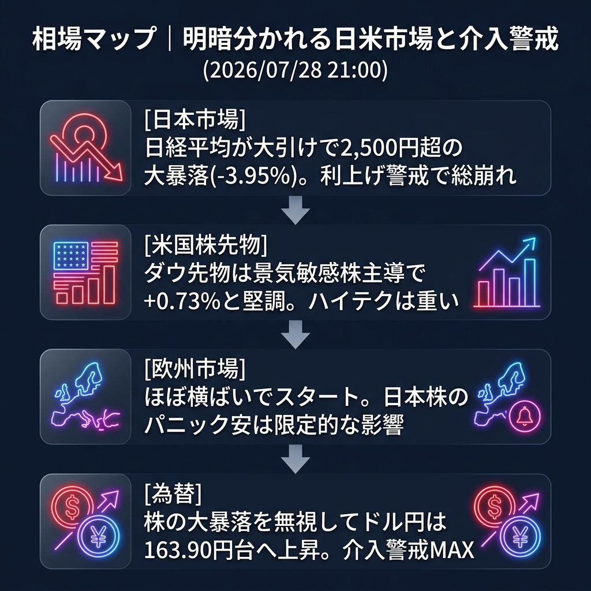

日銀の利上げ警戒で自壊した日本株（-3.95%大暴落）を横目に、米国株（ダウ先物）や欧州株は堅調に推移。ドル円は日本株のパニックを完全に無視し、163.90円台へとじり高歩調で為替介入警戒ラインへ突入しています。
「日本市場の単独クラッシュ」と「イベント前の資金避難（ドル需要）」。
日経平均は大引けにかけてさらに下げ幅を拡大し、最終的に2,500円超の大暴落（62,364円）で終えました。一方で、欧州市場がオープンすると、欧州株価指数（STOXX50、DAXなど）は小幅な上下動に留まっており、日本発のパニック売りがグローバルに波及する「世界同時株安」の連鎖は起きていません。
むしろ、ダウ先物が+0.73%と堅調に推移しており、出遅れていた景気敏感株への見直し買いが継続しています。為替もドル円が163.90円台まで上昇しており、日本の大暴落による「円高」は一切発生していません。
| 指数・銘柄 | 現在値 | 前回比（前日比） | 騰落率 | 確認事項 |
|---|---|---|---|---|
| S&P 500 (ES=F) | 7,450.0 | +1.75 | +0.02% | ほぼ横ばい推移 |
| Nasdaq (NQ=F) | 27,962.0 | -228.0 | -0.81% | テック決算前で上値重い |
| Dow (YM=F) | 52,766.0 | +384.0 | +0.73% | 景気敏感株へのシフト顕著 |
| 日経225現物 | 62,364.92 | -2,566.27 | -3.95% | 大引け。歴史的大暴落 |
| CME日経225先物 | 62,475.0 | -1,580.0 | -2.47% | 現物引け後も低迷 |
| USD/JPY | 163.917 | +0.215 | +0.13% | 164円手前で介入警戒高まる |
| EUR/USD | 1.1368 | -0.0007 | -0.06% | 小幅なドル高推移 |
| 金 | 4,024.7 | -52.3 | -1.28% | 4,000ドルの節目に接近 |
| 原油 | 81.50 | -1.11 | -1.34% | 需要懸念で下落トレンド継続 |
| BTCUSD | 63,390.0 | -316.66 | -0.50% | 63,000ドル台でもみ合い |
今夜の米国市場では、「メガテック決算（Microsoftなど）を控えた警戒感」と「JOLTS求人件数などの経済指標」がポイントとなります。
ダウ先物が強いことから、NY市場はハイテク株が弱くても全体としては底堅い展開（セクターローテーション）が予想されます。また、ドル円が164円に迫っており、NY時間での日本の通貨当局による「覆面介入」リスクがかつてなく高まっています。
今夜の米国JOLTS求人件数が予想外に弱く、米国の「利下げ期待」が急拡大した場合。米金利が急低下し、ドル円は介入なしでも急落、逆にナスダックやゴールドが急反発する展開となります。